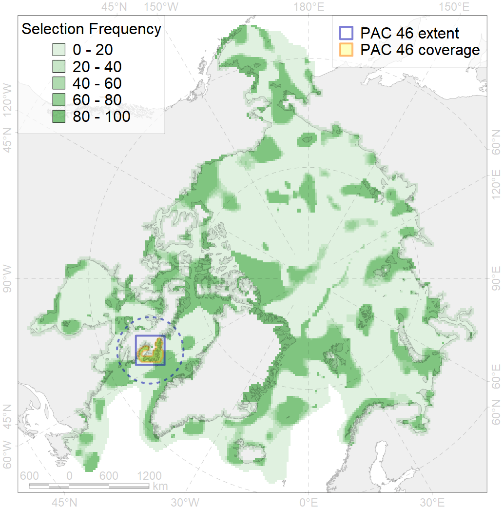
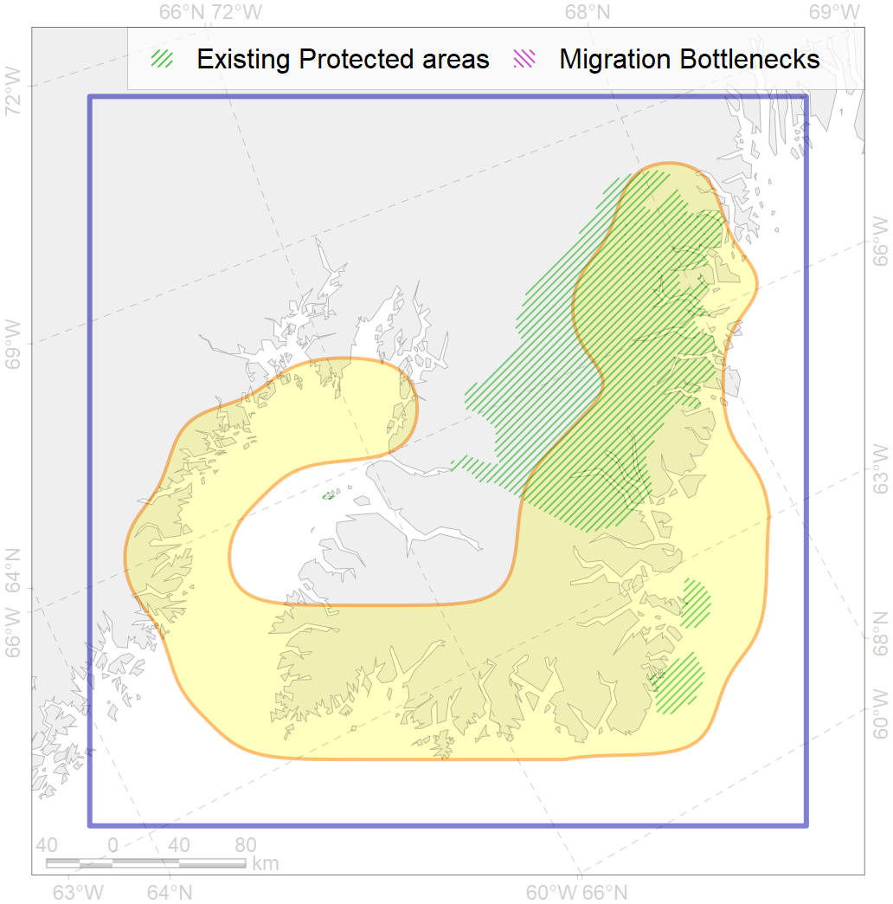

46
For more information regarding this PAC and to conduct custom spatial analysis using the PAC data or any spatial query, please consult Accenter.

0
CFs entirely within the PAC area
6
CFs at least 25% within the PAC area
4
CFs with at least 50% of their target achieved in the PAC
13
CFs with at least half of their target achieved in the PAC
| CF ID | CF Name | Proportion in the PAC | Conservation Target | Contribution to ArcNet Target Achievement | PAC’s Contribution to the Achieved Target |
|---|---|---|---|---|---|
| 5011 | Beluga of the Cumberland Sound summer core distribution | 76.1% | 72.0% | 99.3% | 97.7% |
| 5012 | Beluga of the Cumberland Sound winter distribution | 58.0% | 48.0% | 92.9% | 81.1% |
| 7239 | Kelp forests of south-east Baffin I. coast | 48.0% | 30.0% | 144.9% | 78.9% |
| 9023 | polar bear denning areas of DS (Davis Strait) subpopulation | 39.3% | 64.8% | 51.5% | 50.8% |
| 3130 | Polynyas distribution in the Cumberland region | 35.7% | 12.0% | 254.3% | 59.0% |
| 5074 | Narwhal Eeast Baffin Island stock summer distribution | 26.5% | 48.0% | 53.2% | 50.7% |
| 7143 | III.2.1.2. Baffinian glacial troughs | 24.8% | 14.3% | 147.7% | 56.1% |
| 9021 | polar bear denning areas of BB (Baffin Bay) subpopulation | 20.2% | 64.8% | 30.7% | 30.7% |
| 7019 | Baffinian region | 18.1% | 30.6% | 57.0% | 41.4% |
| 8038 | Baffin and Bylot Islands glacial termini | 16.2% | 30.0% | 54.2% | 18.4% |
| 7142 | III.2.1.1. Baffinian shelf | 9.6% | 6.8% | 131.4% | 18.2% |
| 7052 | cold corals of Canada and Western Greenland | 8.7% | 50.0% | 17.4% | 11.6% |
| 6029 | Glaucous gull (Larus hyperboreus euceretes) breeding grounds | 7.9% | 12.0% | 59.7% | 13.7% |
| 1011 | Atlantic Walrus haulouts in Nunavut and West Greenland | 7.9% | 96.0% | 7.9% | 7.9% |
| 9002 | polar bear of the BB (Baffin Bay) subpopulation distribution | 6.7% | 32.4% | 20.3% | 16.7% |
| 5078 | Narwhal Eclipse Sound stock winter core distribution | 6.5% | 72.0% | 8.8% | 8.5% |
| 2007 | Bearded seal whelping areas in the Baffin Bay | 6.1% | 24.0% | 23.6% | 8.2% |
| 3034 | Marginal Ice Zone distribution in July in the Baffin Bay LME | 5.6% | 24.0% | 20.8% | 8.6% |
| 4035 | Feeding area of the Lake trout (Salvelinus namaycush) | 5.5% | 14.4% | 33.0% | 13.3% |
| 5065 | Killer whale summer feeding areas in the North West Atlantic | 5.2% | 6.0% | 72.7% | 7.4% |
| 5039 | Bowhead whale autumn concentrations in the Baffin Bay | 5.2% | 48.0% | 9.5% | 9.4% |
| 9005 | polar bear of the DS (Davis Strait) subpopulation distribution | 4.9% | 32.4% | 13.5% | 10.1% |
| 2044 | Ringed seal whelping areas in the Baffin Bay region | 3.5% | 24.0% | 13.3% | 6.5% |
| 5041 | Bowhead whale summer concentrations in the Baffin Bay | 3.5% | 48.0% | 6.4% | 6.2% |
| 2021 | Harp seal foraging areas in the Baffin Bay region | 3.5% | 24.0% | 13.1% | 6.1% |
| 6015 | Black guillemot (Cepphus grylle mandti) breeding grounds | 3.4% | 12.0% | 26.3% | 5.7% |
| 1002 | Atlantic Walrus Summer Distribution in Canada | 3.4% | 33.6% | 8.9% | 6.1% |
| 4048 | Feeding/nursery area of the ogac (Gadus ogac ) | 2.7% | 12.0% | 20.3% | 5.1% |